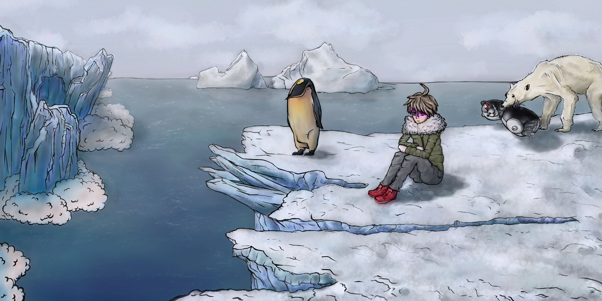
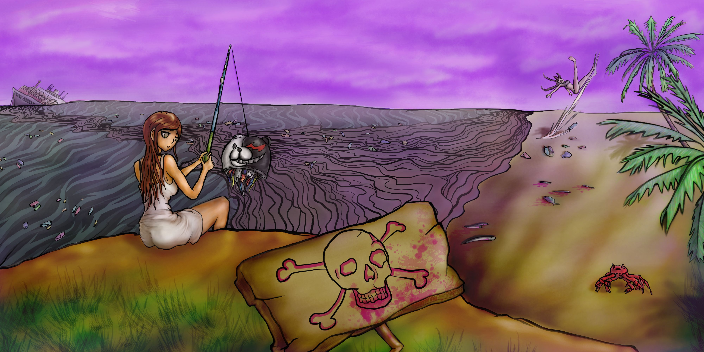

Hola soy Noemí, una chica que nació en una pequeña ciudad llamada Teruel. Actualmente estoy viviendo en Castellón debido a mis estudios universitarios y en un futuro me gustaría dedicarme al mundo de los videojuegos de forma profesional.
Me apasiona el arte en general y me considero una persona muy creativa, lógica y sensible. La música, el cine, los comics, pixel art, la arquitectura, la fotografía e incluso la psicología. En general, me gusta crear cosas nuevas a partir de mis ideas. En mis ratos libres me gusta hacer cosplay, creo disfraces y personajes basandome en videojuegos y series de cualquier tipo. Incluso cuando tengo tiempo y estoy por Teruel, me apunto a actividades en la cruz roja. Ya llevo 3 años como voluntaria y he aprendido muchísimo. Primeros auxilios, feminismo, clases de apoyo a niños, educación emocional, o simplemente ayudar con actividades cotidianas que hace la cruz roja.
También soy una persona muy reflexiva y perfeccionista, me gusta analizar todo, esto me ayuda a tener una visión global de los proyectos que quiero realizar y sacarles el máximo provecho.
En cuanto a la programación, me se defender y me gusta. Tengo facilidad para aprender e implementar los lenguajes, aunque si tubiera que destacar algo sin duda sería mi visión espacial. Este año voy a realizar un edificio en blender y es de momento lo que más ilusión me hace.
En esta galería, encontrarás mi arte y programación realizada hasta el momento.
 